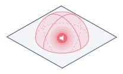
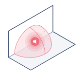
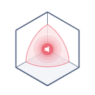

Impact sonore – ISO 9613 simplifié
ⓘ
Cette application calcule une estimation simplifiée de l'impact sonore
pour une seule source ponctuelle
.
Le degré de précision de l'estimation dépend grandement de la qualité des données d'entrée.
Les résultats de calculs sont à titre indicatif seulement et ne remplacent pas une analyse complète de la situation.
Type d'entrée
Puissance Lw
Niveau Lp
Puissance par bandes
Niveau par bandes
Démo
Valeur (dB)
Bandes d’octave
31.5 Hz
63 Hz
125 Hz
250 Hz
500 Hz
1 kHz
2 kHz
4 kHz
8 kHz
Distance de mesure (m)
Distance d’évaluation (m)
Type de sol (g)
?
g = facteur de sol simplifié (ISO 9613) :
0 → sol dur (béton, eau)
2 → sol mixte
4 → sol mou (herbe, neige)
Plus le sol est mou, plus l'atténuation est importante.
Pour un résultat conservateur, laisser la valeur à g = 0.
Dur (g=0)
Mixte (g=2)
Mou (g=4)
Directivité (Q)
?
La directivité Q représente la répartition du son dans l’espace.
Configuration
Schéma
Sol (Q=2)

Mur (Q=4)

Coin (Q=8)

Plus Q est élevé, plus le son est dirigé.
Sol (Q=2)
Mur (Q=4)
Coin (Q=8)
Calculer